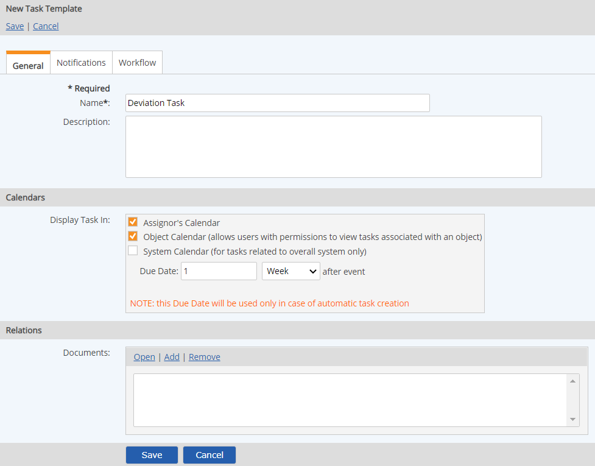

Task templates can be used to define global settings for associated tasks. Task templates are also used for tasks that are automatically triggered by event log instances or limit exceedances.
The task template may specify:
Due date relative to an event that triggers the task (used only for automatic task creation for events and limits on numeric requirements)
Calendar display options
Associated documents
Notifications to be sent, and the notification template to use (which defines the message content)
Workflow to be triggered by a task
A Task Template can be applied to a task at task creation, or may be applied retroactively to existing tasks. When applied to existing tasks, the original calendar display options, associated documents, notifications and workflow triggers will be overridden. Additionally, once a task template is applied, these options will not be editable from the task properties and will only be editable from the task template.
Task templates for automatic tasks are applied on the object properties form for the following objects:
A Numeric Requirement, associated with the internal and/or regulatory limits. Can be used to automatically trigger a task, task notifications, and optional workflow when the associated limit is exceeded.
An Event Log. Can be used to automatically trigger a task, task notifications, and an associated workflow when an event occurs.
To access Task Templates, create or modify task templates, you must have the Manage Task Templates right.
View existing task templates
From the menu, select Setup > Task under Templates. The Task Templates are displayed.
Browse the list by selecting consecutive pages, or use the search function to find a template. The # Ref column indicates the number of objects associated with the template.
Create a new task template
From the menu, select Setup > Task under Templates.
Select New Task Template or right in the Task Templates list and select New.
Enter a Name for the template. The name of the template becomes part of the name for the task, according to the following formula:
For a task triggered by data exceedance on a Numeric Requirement or an Automatic event monitoring numeric requirements: Task name = [Task Template Name]: [Monitored Requirement]
For a Manual event: Task name = [Task Template Name]: [Event Name]
Enter the task Description. The description is the default content of the message that is shown in a standard task notification, if no Task Notification Template is applied. For a standard task notification, the description might contain the instructions for the task.
Select the Calendar display options for the tasks.
If the task template will be used for an event log or limit exceedance, a due date is required. The due date will be relative to the event that triggers the task instance. The due date is used only for automatically created tasks.
To associate documents (optional) with tasks using the template, click Add in the Associate Documents box and select one or more documents from the Documents Library.

Select the Notifications tab to set up task notifications. See Add/Edit Task Notifications. In order for task assignees to receive an email notification for an automatically triggered task (for an event log or limit exceedance), at least one notification must be set up Immediately to Task Assignee.
Select the Workflow tab to configure a workflow to be triggered by the task. See Task Triggered Workflows.
Select Save, then Confirm to save the template.
Edit a task template
Right click the template in the Task Templates list and select Edit. The properties form is displayed for editing, as above.
Modify the properties of the task template as desired.